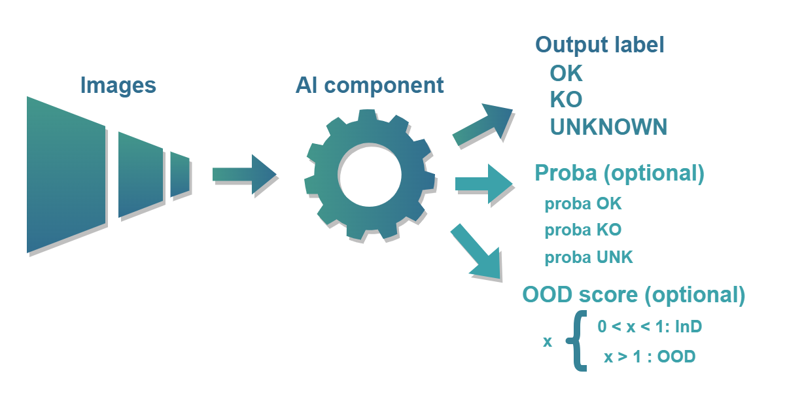
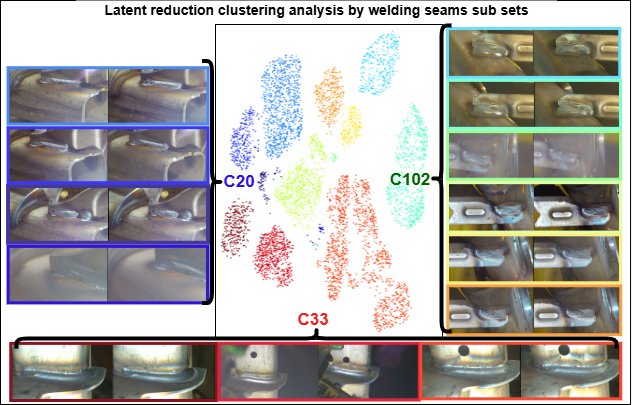
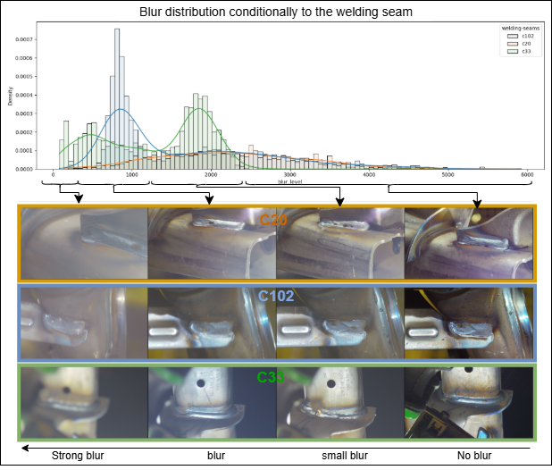
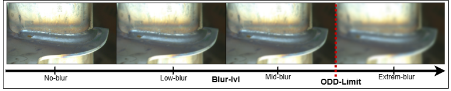
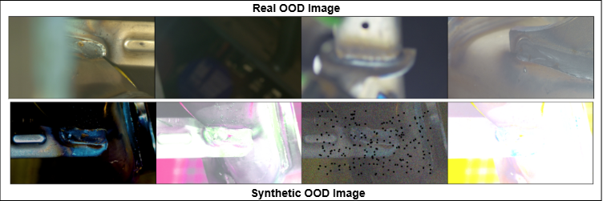
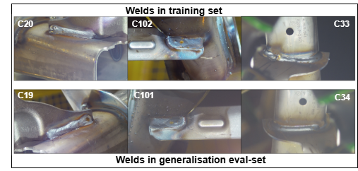
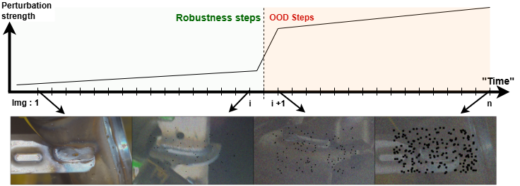

Industrial and Trustworthy AI Challenge: Welding Quality Detection
Join us and engage with a real-world challenge to enhance weld quality inspection in industrial processes.

Before development phase
# Context
In the highly competitive automotive industry, quality control is essential to ensure the reliability of vehicles and user safety. A failure in quality control can severely jeopardize safety, result in significant financial costs, and cause substantial reputational damage to the company involved.
One of the challenges for Renault is to improve the reliability of quality control for welding seams in automotive body manufacturing. Currently, this inspection is consistently performed by a human operator due to the legal dimension related to user safety. During an industrial process, this task is resource-consuming. The key challenge is to develop an AI-based solution that reduces the number of inspections required by the operator through automated pre-validation.
Within the Confiance.ai (opens new window) Research Program, Renault Group and SystemX worked jointly on the development of trustworthy AI components tackling this problem. Now part of the European Trustworthy Foundation (ETF) (opens new window), we want to ensure that these tools effectively validate the proposed AI-Component according to the trustworthy criteria defined by the industry (Intended Purpose).
This industrial use case, provided by Renault Group, represents the “Visual Inspection” thematic through a classification problem.
The goal is to be able to assess weld quality from a photo taken by cameras on vehicle production lines.
A weld can have two distinct states:
- OK: The welding is normal.
- KO: The welding has defects.
The main objective of the challenge is to create an AI component that will assist an operator in performing weld classification while minimizing the need for the operator to inspect the images and double-check the classifications.
For defect identification ("KO"), the system should provide the operator with relevant information on the location of the detected defect in the image, hence reducing the control task duration.
# Expected AI Component
The AI component takes an image as input and optionally some additional metadata. Three possible outputs are possible:
- OK: The welding in the image has no defect.
- KO: The welding in the image has defects.
- UNKNOWN: The welding state is UNKNOWN. UNKNOWN is used to indicate that the AI-Component is not sure about the predicted class. The UNKNOWN output can be less penalizing than a False Negative (meaning a true KO predicted as OK), which has a critical cost but is also penalized if it used in place of KO label.
Optionally, the AI component could additionally return the probability associated with each possible output state. If probabilities are not provided, they will be inferred based on the label by assigning a probability of 1 to the predicted class.
The component must also produce an OOD (Out-of-Distribution) score. This score takes a value between 0 and +infinity. When the score is greater than or equal to 1, it indicates that the input has been detected as OOD. By default, in the absence of an OOD detection module, the OOD score can be set to 0.
This is illustrated by the figure below:

See the Getting_started page to get details about the expected component interface.
# Purpose of the Challenge
The Trustworthy AI Challenge aims to build a reliable AI component to assist in weld seam conformity qualification. This involves:
- Developing an efficient AI component that meets performance requirements in terms of anomaly detection, meaning high defect detection accuracy while minimizing false positives that cause time loss due to unnecessary operator verification.
- Developing a trustworthy AI component that meets ML trustworthiness requirements, ensuring the system can operate effectively in real-world scenarios — such as being robust to minor environmental disturbances, generalizing across datasets, expressing uncertainty, and handling anomalies.
# Operational Design Domain (ODD) of the AI Component
The Operational Design Domain refers to a set of business specifications defining the conditions under which the AI component must operate effectively. In our case, domain experts defined the acceptable conditions for image acquisition:
- Image brightness may vary
- Image blur (caused by production line vibrations) may vary.
- Welding seams may appear with rotation angles between -30° and +30°.
- The position of the piece in the image may be translated by up to 5 millimeters (approximately 100 pixels, depending on seam and camera position).
In practice, while these conditions are helpful for guiding design and evaluation, they are not always directly exploitable. For example, creating a descriptor capable of measuring image brightness independently of background content is a non-trivial challenge. That is why
See the Evaluation page to get more informations about how those informations are used to evaluate your solution.
# Data Specificities
The dataset contains 22,753 images split among three different welding seams. An important property of this dataset is that it is highly unbalanced. There are about 500 KO images in the entire dataset.
Here is below some examples of weldings OK and KO on two different welding seams c10 and c19.


# Unbalanced Dataset
The dataset is highly imbalanced, with 98% of samples labeled as OK and only 2% as KO (defective). It is also slightly imbalanced between weld types:
C20: 22%C33: 39%C102: 39%
Some weld types may present defects that are inherently more difficult to detect than others.
# Heterogeneous Dataset
The dataset contains heterogeneous images due to several factors:
- Three different weld types are included, each with distinct shapes and backgrounds.
- For a given weld type, multiple viewpoints and capture angles exist.
- Even within a single setup, image quality varies due to lighting conditions, part positioning, or motion blur.
A simple exploratory data analysis reveals relatively “homogeneous” clusters, identified using the HDBSCAN algorithm applied on a UMAP-reduced latent space produced by a Variational Autoencoder (VAE).

Visualizing blur distribution conditioned on weld type, shows that blur quality varies according to the type of weld.

Because descriptors like blur or luminance are not invariant across heterogeneous conditions, the operational domain cannot always be explicitly modeled. Therefore, the challenge is to design AI-component with robustness and anomaly detection capabilities that can adapt to these ill-defined variations.
See the Dataset page to get more informations about the provided datasets.
# AI Component Specifications and Operational Requirements
Discussions with operators and data analysis have highlighted key needs:
- False negatives (defective welds classified as OK) pose safety risks and must be minimized — this is the top priority.
- Prediction accuracy should be maximized.
- The criticality of a weld varies by location, influencing the impact of a false negative.
- Variability in image quality demands mechanisms that ensure AI-component reliability and input data validation.
# Requirements
Operational specifications can be grouped into three categories: general, performance, and trustworthy AI requirements.
# General Requirements
- The component must process three weld types:
['C20', 'C33', 'C102']. - Input images may vary in size, quality, and framing.
- The component must be trained on the provided weld image dataset, which may suffer from quality and representativeness issues — requiring data cleaning or augmentation.
# Performance Requirements
- High detection accuracy must be achieved with minimal false negative.
- Operational performance evaluation will take into account the criticality of each weld type.
- Inference time must not exceed 1/12 of a second for each image.
# Trustworthy AI Requirements
Robustness: The AI-Component should be resilient to slight variations in image capture (brightness, blur, minor rotations [-10°, +10°], translations up to ~20 pixels).
Uncertainty Estimation: The AI-component should provide classification probabilities and an
"unknown"class to express indecision.Generalization: The AI-component should generalize to unseen weld types (
['C19', 'C34', 'C101']) that share common features with training data.Out-of-Distribution (OOD) Monitoring: The AI-component must detect OOD inputs, such as images with poor visibility due to blur, occlusion, or unusual coloration.
Drift Handling: The AI-component must remain robust to mild image capture degradation (e.g. Gaussian noise, dead pixels) and detect strong degradation as OOD.
# Trustworthy Evaluation
The goal of the trustworthy evaluation is to measure both key performance and trustworthiness & indicators KPIs, assessing the AI system’s ability to function reliably under real-world conditions — including robustness, generalization, uncertainty management, and anomaly detection.
The evaluation framework is based on a multi-criteria analysis of six trust attributes:
Performance, Uncertainty Assessment, Robustness, OOD Monitoring, Generalization, and Data Drift Handling
Each is evaluated via Trust-KPIs, which are composed of specific criteria measured using dedicated metrics. These metrics are aggregated to provide synthetic indicator that will facilitate decision-making.
Evaluation may require specific datasets — selected or synthetically generated — to simulate controlled scenarios. From the AI component’s predictions on these datasets, the following KPIs will be computed:
Performance KPI & Metrics
Evaluate jointly accuracy (operational and ML), inference time, and weld-type criticality sensitivity taking into account data heterogeneity and operational specificity. It is based on a standard evaluation data set contains 20% of the data drawn to obtain a representative sample of the data.Uncertainty KPI & Metrics
Evaluate jointly the relevance and calibration of the AI-Component’s confidence estimates to ensure alignment between expressed uncertainty and actual error risk. The standard evaluation data set contains 20% of the data drawn to obtain a representative sample of the data. It is based on a standard evaluation data set contains 20% of the data drawn to obtain a representative sample of the data.Robustness KPI & Metrics
Evaluate jointly the AI-Component’s ability to produce stable predictions under slight perturbations (blur, lighting, rotation, translation), in line with ODD specifications. It is based on a Robustness evaluation set generated from real data (chosen to be representative and of good quality) on which we applied perturbation of controlled magnitude.
OOD Monitoring KPI & Metrics
Evaluate the AI-Component’s ability to detect inputs that fall outside the expected data distribution (e.g. real or synthetic OOD images with poor weld visibility). It is based on a real evaluation set selected through discovery-based protocol, or synthetic evaluation set generated on a set of real data (chosen to be representative and of good quality) to which we have applied strong disturbances (ex: Coloration, brightness, contrast).
Generalization KPI & Metrics
Evaluate the AI-Component’s ability to generalize to unseen weld types that resemble those in the training set. The generalization data were chosen on the basis of their proximity to the training data.
Data Drift KPI & Metrics
Evaluate the AI-Component’s ability to handle hardware degradation: robustness under mild drift, and OOD detection under severe drift. It is based on a data-drift evaluation set generated on a set of real data (chosen to be representative and of good quality) to which we have applied strong disturbances of increasing intensity (ex: Gaussian noise).
# Evaluation environment
Each submitted AI component is evaluated in an environment with the following specifications :
System: Linux 5.14.0-503.29.1.el9_5.x86_64 (x86_64)
Processor: x86_64
CPU Cores: 12 physical, 24 logical
Max Frequency: 3700.00 MHz
Memory Total (RAM) : 251.26GB
GPU : Tesla P100-PCIE-16GB
GPU Memory Total: 16.00GB
GPU Driver: 570.124.06
Python version : 3.12
# Timeline
- Competition kick-off: March 17st March 31st
Competitors will receive the starter-kit and will have access to the challenge datasets. - Warm-up phase: from March 17st to April 14th March 31st to April 27th.
Participants can get familiar with the competition platform and the provided material. Organizers can use participants’ feedback to adjust the challenge for the next phases. - Development phase: from April 14th April 28th to August 17th.
Participants will develop their own solutions, which they can test on a provided dataset. They will be able to see the score of their submitted solution. Any submitted solution can be adjusted until the deadline is met. - Final phase: from August 18th to September.
During this phase, the organizers will review the submitted results, finalize the ranking, and prepare the results. - Results announcement: September 2025
The winners will be announced during the Confiance.ai Community Event 2025.
# Prizes
- 🥇 1st Place: 4000 €
- 🥈 2nd Place: 2000 €
- 🥉 3rd Place: 1000 €
- 💡 Most Original Solution: 1000 €
Winners will also gain visibility at the Confiance.ai Community Event, the flagship gathering for industrial and responsible AI.
# Protocol
Anyone can take part in this challenge: students, engineers, and everyone else. If you’re up to the challenge, you’re in the right place!
Each participant or organization can submit only one solution. If a participant is part of a team, individual submissions will not be accepted.
The challenge will be hosted on Codabench.
After the kick-off, participants will be invited to create an account and download the starter-kit to prepare their submissions. Once the solutions are ready, participants shall upload them on the Codabench platform.
# nwsltr
# Stay informed about the latest challenge updates
# Useful links:
Github: Reference Solution (opens new window) Starting kit (opens new window)
Solution submission: Codabench (opens new window)
# Contact
Challenge mail: challenge.confiance@irt-systemx.fr
Discord: European Trustworthy AI Foundation #welding-quality-detection-challenge (opens new window)